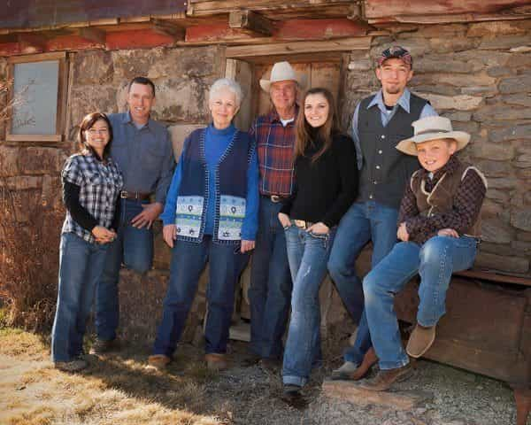
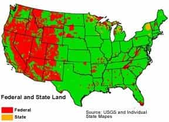
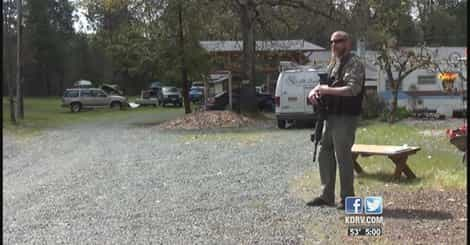

< < < Back
Will Ammon Bundy’s Oregon Uprising Herald A Revolt Against The U.S. Government? – Return Of Kings
Over the weekend, the Internet exploded following news that 150 armed militiamen had taken over the Malheur National Wildlife Refuge in rural Harney County, Oregon, near the border with Nevada. The dispute has its origins in a long-standing conflict between local ranchers and the Bureau of Land Management (BLM) over the pending imprisonment of two men accused of arson. Ammon Bundy and two other sons of Cliven Bundy, a Nevada rancher known for leading a standoff against the BLM two years ago, are leading the occupation:
“We’re going to be freeing these lands up, and getting ranchers back to ranching, getting the loggers back to logging, getting the miners back to mining where they could do it under the protection of the people and not be afraid of this tyranny that’s been set upon them,” Ammon Bundy, who appears to be the leader of the group, said in a Facebook video posted by Sarah Dee Spurlock on Saturday.
As of this writing, federal agents are continuing to negotiate with the militia, which is refusing to back down unless their demands are met.
Notably, the incident has sent leftists into a tizzy, with major figures such as Montel Williams calling for President Obama to send in the military to clear out the militiamen with “shoot-to-kill” orders. Other progressives have claimed that the government’s supposedly light treatment of Bundy’s group compared with the supposedly harsh punishments meted out to #BlackLivesMatter protesters and Muslims as indicative of white privilege, mockingly referring to the militia as “Y’all Qaeda” and “Vanilla ISIS.”
While neither I nor Return of Kings condone violence, the Oregon incident is the result of the BLM and other government agencies abusing their power. Unbeknownst to most Americans, the federal government has been waging a war on white ranchers in the American West for the decades, systemically stripping them of their ability to make a living. With their way of life threatened—and attempts to solve the problem peacefully failing—Ammon Bundy and his ilk have been forced to make their point in other ways.
A Brief History Of Environmentalist Tyranny

The genesis of the Oregon standoff involves the federal government’s persecution of two ranchers from the area: Dwight Lincoln Hammond, Jr. and his son Steven Dwight Hammond. In 2006, the Hammonds were arrested and convicted of arson after setting a fire on their land in order to clear out invasive plant and animal species, a fire that spread to adjacent federal-owned land. (Some have argued that they actually set the fire to cover up illegal hunting; since none of us were there, we can’t say for sure what happened.)
The Hammonds were sentenced to five years in prison, served their time and were released. However, several months ago, Bureau of Land Management Field Manager Rhonda Karges and her husband Chad (the manager of the Malheur National Wildlife Refuge) filed an appeal to send the Hammonds back to prison for the same charges.
Last October, the 9th District Federal Court re-sentenced the Hammonds to five more years in prison on domestic terrorism charges, claiming that the two had not served enough time according to minimum mandatory sentencing guidelines for arson. The Hammonds were due to report to prison on January 4, 2016.
It gets worse. The Bureau of Land Management has been waging a campaign against the Hammonds and other ranchers for years, including arbitrarily revoking grazing permits and blocking off access to portions of their property, despite the fact that the Hammonds’ ownership of their ranch predates the creation of the BLM. Since the vast majority of land in the West is owned by the federal government, ranchers have had to utilize federal lands to graze their cattle for generations:

To put it simply, the Hammonds and other ranchers are in a fight for their survival. The federal government’s constant power-grabs and harsh treatment of ranchers has severely crippled their ability to make a living. The Hammonds, Bundys and other ranching families have tried to obey the law and work with the government for years, and the feds have responded by spitting in their faces. A reaction of this kind was inevitable.
The Tree Of Liberty, The Blood Of Tyrants?

While it’s too early to say if the Oregon uprising is evidence of a full-scale revolt against the U.S. government, it shows that American society has reached its breaking point. As Ammon Bundy has repeatedly stated, the takeover of the Malheur Wildlife Refuge was not a spur-of-the-moment incident, but had been planned for years. When law-abiding citizens resort to actions such as this, it’s indicative of deep, abiding rot in our social framework.
Leftists who are howling for the government to put down the Oregon revolt with violent force would do well to remember what happened the last time that happened. The Clinton administration’s horrifying response to the Waco siege in 1993—bombing the Branch Davidians’ compound and killing nearly a hundred people—helped carry the Republicans to a congressional majority in the midterm elections of 1994. Additionally, Cliven Bundy’s successful resistance against federal agents two years ago was a massive embarrassment for the government.
While assisting Ammon Bundy’s forces is illegal, given the massive outpouring of support they’ve received from many ordinary Americans, many readers might be tempted to do so. While we cannot condone or endorse any acts of treason or violence against the government, it’s worth remembering that the United States of America itself was founded as a result of independent citizens resisting a tyrannical government. Take this for what you will.
Read More: Oregon State Government Bankrupts Bar Owner For Refusing To Serve Transsexuals